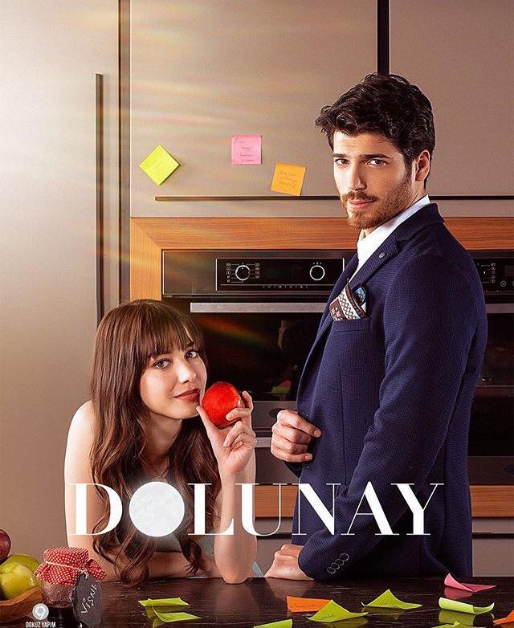

Turkish romantic comedy · Star TV
Dolunay
Full Moon
A perfectionist businessman hires a free-spirited cooking student as his private chef. They can't agree on anything, from the menu to the meaning of a well-run kitchen, but a small nephew who needs a family brings them closer.

The story
Two opposites, one kitchen
Ferit Aslan is a wealthy, famously organised businessman who trusts almost no one, a habit that began with his mother's infidelity. Nazlı Pınar is a cheerful gastronomy student who dreams of opening her own restaurant while trying to keep her younger sister out of trouble.
When Nazlı is hired as Ferit's private chef, his rules meet her improvising, and the arguments start on day one. Everything changes when Ferit fights to raise his orphaned nephew Bulut. Bulut adores Nazlı, and he is determined to make the two grown-ups fall in love.
Over 26 episodes the series mixes comedy, romance and family drama, with rivals, secrets and plenty of food along the way.